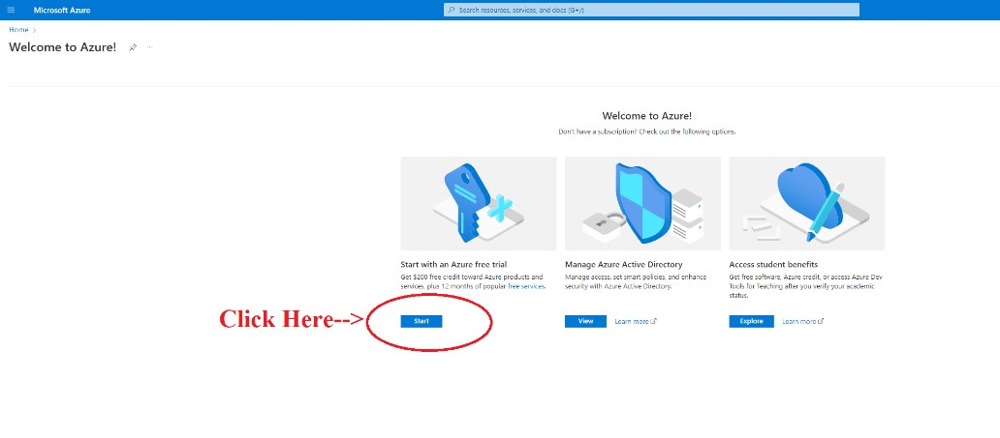

VMware instructions for Windows Install
Having a difficult time installing your VM for class?
Use the step by step guide below to setup your VM.
Let's Get Started!
- Step One
- Step Two
- Step Three **Note: Make sure you are logged in under your student account(@saintleo.edu) in the top right of the page. ** 
- Step Four
- Step Five
- Step Six
- Step Seven
- Step Eight **Note: Make sure to check the licensing box under the “Create” button. **
- Step Nine Click “Create” once the validation is passed.
- Step Ten Your VM has been created!
- Step Eleven Access your VM
- Step Twelve
- Step Thirteen Check the IP before connecting
- Step Fourteen Log in
- Step Fifteen Congratulations, you have a brand new Virtual Machine.